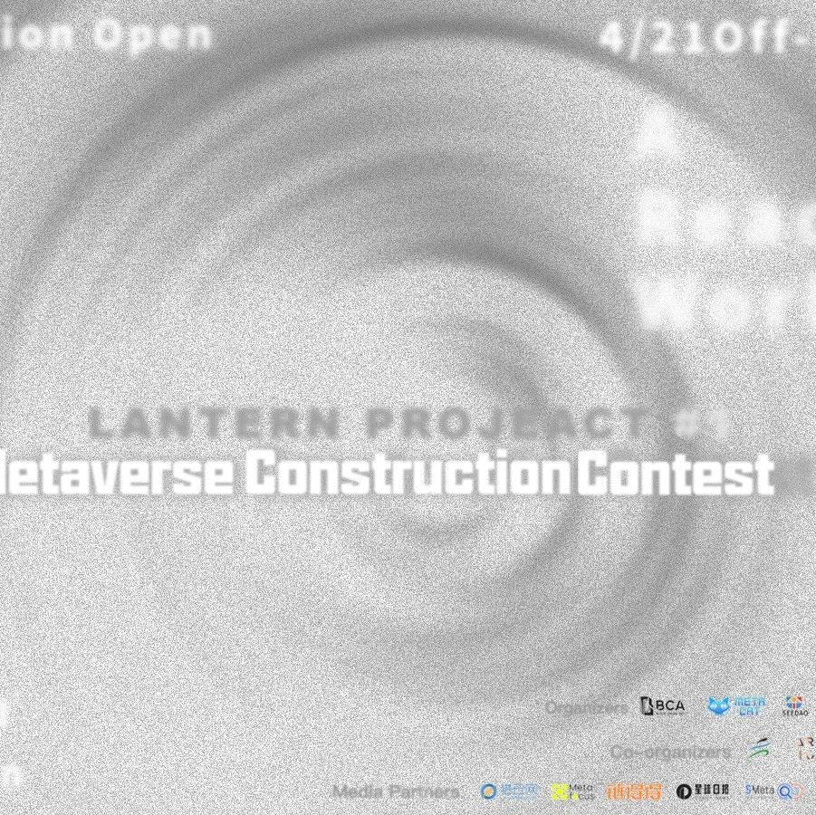

提灯人Project#1—元宇宙建设大赛报名开启！
作者: the seedao
在充分的创作自由中，设计理想中的建筑

■元宇宙降临，虚实融生，全新的社会图景正在悄然浮现。想成为元宇宙世界的建筑师参与其中吗？想创造自己的 cyberpunk 世界吗？■除丰富先锋的文化活动外，SeeDAO的伙伴们也正在建筑等多个领域不断探索，SeeDAO建筑公会一贯以兼具独特美感和前卫理念的建筑作品著称。现阶段已经完成了人民广场、城隍庙等完整作品，在未来也将积极探索建筑的更多可能性并启动奖学金计划，旨在带领更多建筑师、艺术家深入web3.0，共创web3.0。
■现烤仔建工联合SeeDao、 ConfluxDao、MetaEstate、MetaCat、BCA科技艺术、蓬莱设计、发起"提灯人#1"——元宇宙建设大赛，召集优秀元宇宙建筑师，在充分的创作自由中，设计理想中的建筑。大赛由上海日清建筑设计事务所、烤仔建工DAO、速途网、ART101艺术创作联盟、好玩委员会、烤仔创作者联盟、烤仔行动委员会协办，速途元宇宙研究院、Odaily星球日报、Cointelegraph华语、链得得、MetaFocus 作为合作媒体。■参赛者/机构可选择下方至少一个主题进行元宇宙建筑创作：2022 年，元宇宙将迎来怎样的“下一个春天”呢？参赛选手可通过想象或参考目前元宇宙建筑时代的代表性思路，选择竞赛本册（下附二维码）中列出的地块，将其所蕴含的现有文化、环境等内容结合“下一个春天”这一主题进行建筑/场景设计，包括但不限于表达对未来、规则、现状思考的作品。研究显示，到 2026 年四分之一的人将移步元宇宙中进行工作、购物、教育、社交和娱乐。那么，不断完善元宇宙的交互性便成为了主要话题之一。一场涉及技术迁移、行业转型与社会图景重置的新浪潮已然袭来。无论是黑客帝国里的matrix，还是银翼杀手里的焦土风情，亦或是 2001 太空漫游的 capsule 飞船，或致敬或模仿，都交给你。■参赛选手需根据下方地块面积限制，创作能表现元宇宙平台体验感、互动感与沉浸感的作品。参赛选手可在 Cryptovoxels 或 Decentraland 中选择主题完成元宇宙建筑或场景建设，并提交如下内容至lanternproject@tutanota.com ：- 作品链接：Scene (Decentraland) 或 Space (Cryptovoxels) 链接
- 设计说明文档：请用不少于 200 字阐述作品的设计理念等
- 故事线：A1 展板，包含总图、平面图、2 张以上立面图、1 张剖面图、分析图及概念生成）
- 介绍视频：通过简短的视频介绍并展示场景或建筑设计，形式不限，视频格式以 MOV、MPEG、MP4、AVI 为最佳。
■原创声明：参赛作品是参赛者原创作品，不得侵犯任何他人的任何专利、著作权、商标权及其他知识产权；该作品须未在报刊、杂志、网站及其他媒体公开发表，未申请专利或进行版权登记，未参加过其他比赛，未以任何形式进入商业渠道。■参赛作品知识产权归属：作者依版权法享有参赛作品的著作人身权和著作财产权。大赛主办方与合作媒体对所有参赛作品拥有展示和宣传等权利。■凡报名本次大赛、提交作品的参赛者/机构，均视为己确认并遵守本次大赛的规定及要求，并对其作品承担所有责任。若参与者违反上述条款，主办方有权立即取消参赛者/机构参选资格，收回已经给予参赛者/机构的奖项和权益，由此引发的任何法律诉讼、法律责任和财产损失均与主办方无关，由参赛者/机构承担。主办方对本次竞赛具有最终解释权。SeeDAO建筑工会由建筑师，艺术家，3D设计师，前端工程师组成。我们从不同领域视角切入，探索在五感受限的赛博城市中，建筑的呈现形态，对元宇宙社交活动的影响与其存在价值。打造链接Web2与Web3的文化场域。
婉琦_Villanelle
WeChat ID: arT038655
WELCOMETO OUR DISCORD
https://discord.gg/seedao